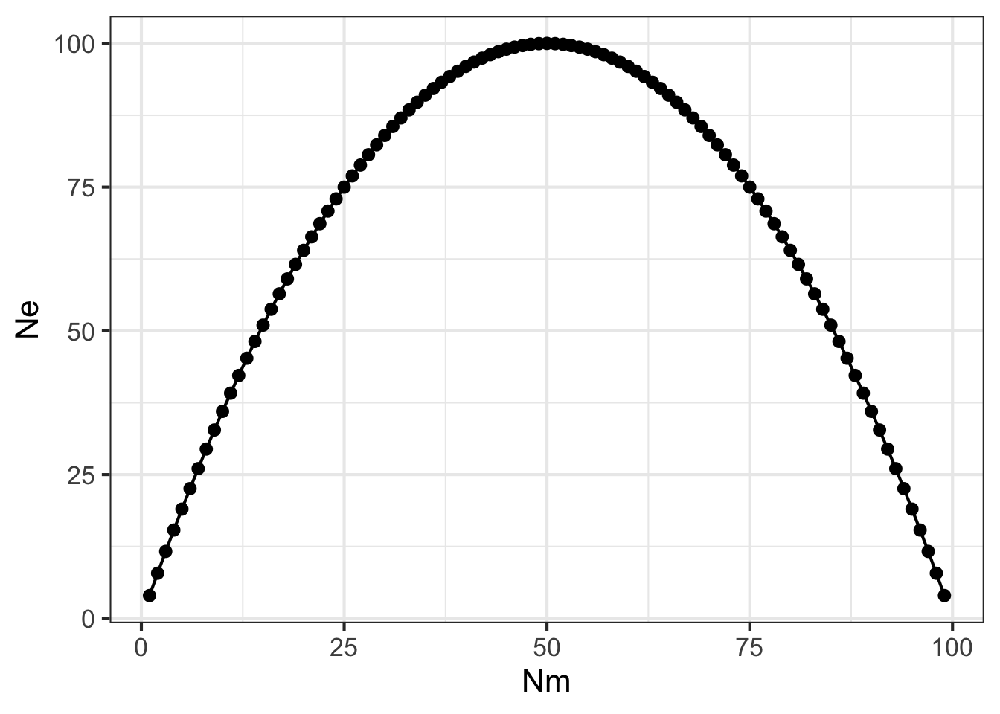
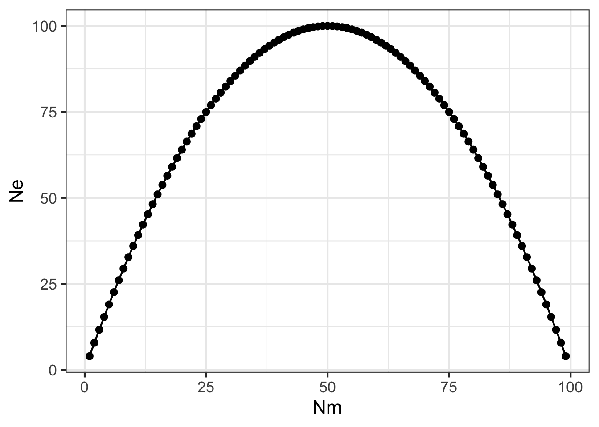
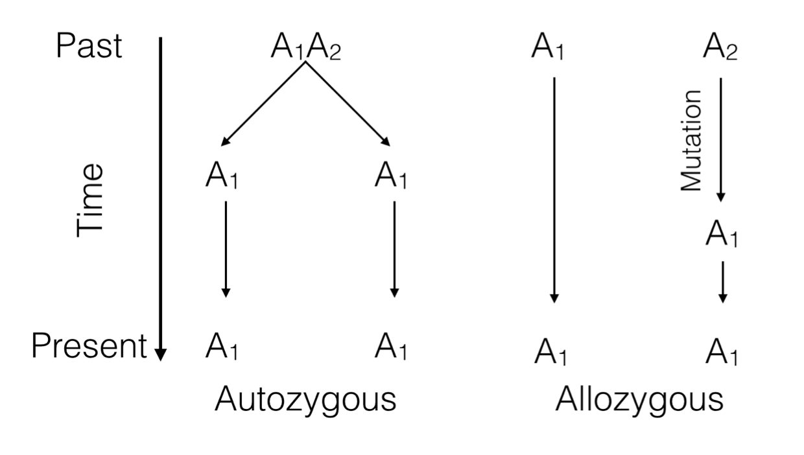
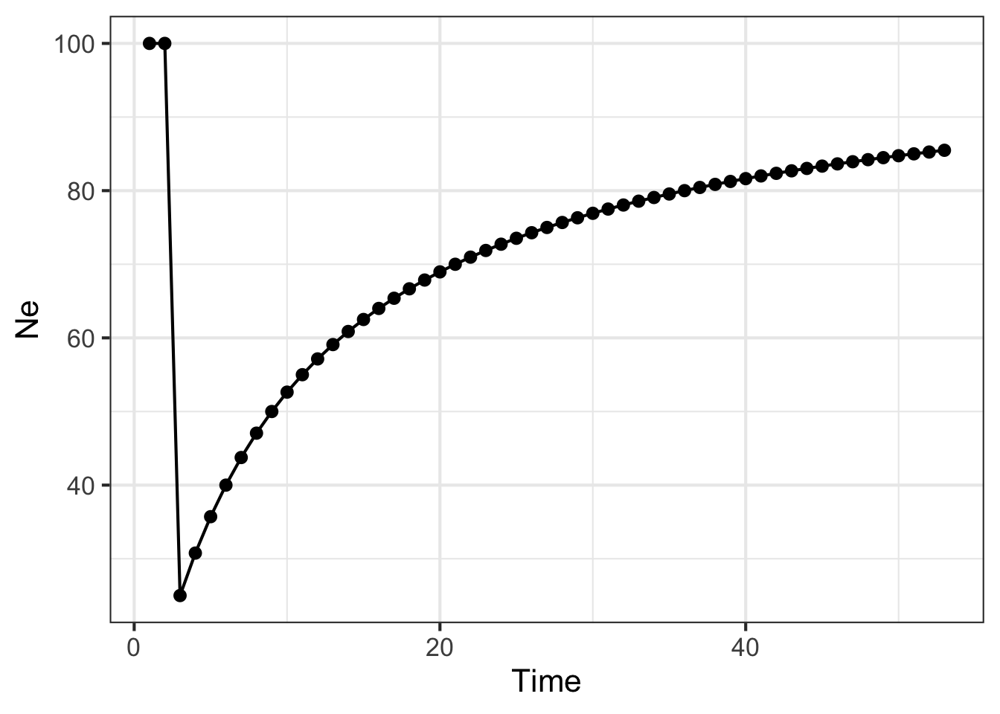

library(ggplot2)
N <- 100
Nm <- 1:99
Nf <- N - Nm
Ne <- (4*Nm*Nf)/(Nm + Nf)
df <- data.frame(Nm,Ne)
ggplot( df, aes(x=Nm,y=Ne)) + geom_line() + geom_point() + theme_bw(base_size=16)

The concept of a “population” is a bit nebulous and up for debate depending upon how you define it and what you are measuring. This section examines the way in which the size of a population can be estimated and the consequences of how alternative mating systems may influence the distribution of genetic variation within populations.
In the previous section on genetic drift, we showed how the number of individuals in the population is critical to the stability of allele (and by extension genotype) frequencies. In this section, we examine additional factors that may influence the number of individuals that should be considered when discussing the consequences of genetic drift with respect to conservation and management practices.
The census population size is a measure of the raw number of individuals present in a population, \(N\). From a genetic perspective, the counting number of individuals in a population is not quite what we are after as there are many different factors (sex rations, life history traits, age stratification, behavioral processes) that may influence the size of the ‘breeding’ population that is contributing to the set of alleles in the next generation.
Here are several situations we need to consider.
library(ggplot2)
N <- 100
Nm <- 1:99
Nf <- N - Nm
Ne <- (4*Nm*Nf)/(Nm + Nf)
df <- data.frame(Nm,Ne)
ggplot( df, aes(x=Nm,y=Ne)) + geom_line() + geom_point() + theme_bw(base_size=16)
Here the maximal size the population can be occurs when there are even sex ratios (e.g., \(N_m = N_f\)) and it decreases precipitously as you deviate from equality. In extreme situations, there may be only one (or a diminishing small number) of male or female individuals that participates in mating events (e.g., harem mating in elephant seals).
Some genes are located on sex-specific chromosomes (e.g., X-Linked genes in humans). This is an identical situation to mixed ploidy taxa such as the Hymenoptera where the female is diploid and the male is haploid. Given the unequal distribution of alleles in the population based upon who has one chromosome and who has two, the effective population size here is given as:
[ N_e = ]
In this case, if \(N_m = N_f\) then \(N_e = \frac{3}{4}N\), which makes sense as the female individuals are giving two copies to the next generation but the males can only contribute a maximum of one copy. As a result, the maximum population size here is always going to be less than for diploid species/markers.
In the extreme case where there is only one female, as is found in honeybees, the equation reduces to
[ N_e = ]
which in the limit of large \(N\) approaches \(\lim_{N_m \to \infty} = 2.25N\).
There are several ways to estimate a ‘genetic effective’ population size, two of which we will be covered here. In essence, a genetic effective population size is an idealized population, one in which all the factors in HWE are true AND produces a set of data like the one you see. Most measurements of effective population size are based upon two generations of data. In each generation, a statistic is derived, and the change in that statistic is used to estimate the idealized population size that could produce a change in that parameter as large as the one observed.
This parameter estimates the size of an idealized population needed for changing heterozygosity across generations by some specified amount. This change in heterozygosity is primarily attributed to inbreeding, a topic fully explored in @ref(selfing) and @(mixed-mating). The inbreeding effective size, \(N_e^i\) is based upon the genealogy of alleles at a locus and the change in inbreeding values across generations.
knitr::include_graphics("media/allele_lineages.png")
Each allele in a genotype has a history that can be traced backwards. If it is a homozygote genotype, the two alleles can be the same because of two possible scenarios.
Identity by Descent (IBD) or Autozygosity: Both alleles are the same because they can be traced, in a pedigree, back to a single common ancestor that gave the same allele to two different offspring. This is the definition of ‘inbreeding’ that we will come back to.
Identity by State (IBS) or Allozygosity: Both alleles are the same but only because of a mutation event that caused them to become identical at some time in the past.
The distinction is important because we need to define the probability of IBD in a population. Consider a population of size \(N_e\). In this population, the probability of two individuals having the same allele from the same parent (IBD) is
[ P(IBD) = ]
The value of \(N_e^i\) can be estimated directly by looking at the change in heterozygosity through time, which is why we call it inbreeding effective size. The expected heterozygosity at some point in the future, say \(t\) generations, is based upon the starting heterozygosity and the population size.
[ H_t = H_0 e^{-} ]
which can be re-arranged to solve for \(N_e^i\) as:
[ N_e^i = - ]
Thus estimating the change in heterozygosity at two points in time, provides a measure of the genetic effective size an idealized population would be to see similar changes in heterozygosity assuming all the remaining factors related to HWE are correct.
Instead of looking at changes in heterozygosity, you can also look at changes in allele frequencies across generations. As shown previously, the probability that allele frequencies change across generations is directly related to population size, smaller populations have a greater chance of producing offspring whose allele frequencies vary wildly from their parents generation. As the population size increases, the variance in allele frequencies (\(\sigma_{\delta p}^2\)) across generations decreases.
[ _{p}^2 = ]
Rearranging this function to solve for the variance effective population size, \(N_e^v\), give us:
[ N_e^v = ]
Both \(N_e^i\) and \(N_e^v\) approach the problem from a different perspective and could provide vastly different numerical approximations for the underlying parameter you are interested in examining. As a result, you must make sure that you are explicit in describing the conditions under which you are estimating these parameters and be specific about the way in which you are estimating them.
The effective population size may also change, stochastically, through time as the population grows and shrinks. Imagine the scenario where a population has \(N_t=100\) individuals. At the next generation, some drastic change in the environment causes a large reduction in the size of the population and it is reduced to \(N_{t+1}=10\) individuals. This demographic bottleneck causes the effective number of individuals to be reduced below the original amount. Genetically, it could only have (at most) a total of 20 alleles at any locus (though that is highly unlikely to have everyone being a heterozygote). The effects of this reduction will be felt for many generations to come, even if the population is able to rebound to larger numbers of individuals.
To derive the expectation here, we need to consider the size of the population through time. The probability of not being IBD during any generation is \(1 - \frac{1}{2N}\). The effective size of the population is going to be a function of the size at each generation based upon the probability of not being IBD. For fluctuating population size, \(N_e\) is the idealized population size that captures the variance in \(N\) across generations. Consider the following case with two generations of data being used to estimate \(N_e\).
[ ( 1 - )^2 = ( 1 - )( 1 - ) ]
If we solve this for \(N_e\) we get
[ = ( + ) ]
which is the definition of the harmonic mean. For any arbitrary number of generations through time then,
[ = ( + + + ) ]
Here is an example using R to show how a single bottleneck can influence population size through time.
N <- c(100,100,10,rep(100,50))
Ne <- 100
for( i in 2:length(N)) {
Ne[i] <- 1 / ( 1/i * sum(1/N[1:i]) )
}
df <- data.frame(Time=1:length(Ne), Ne )
ggplot(df, aes(x=Time,y=Ne)) + geom_line() + geom_point() + theme_bw(base_size=16)
which produces the graph above showing the effects of this bottleneck on the population lasting many generations.